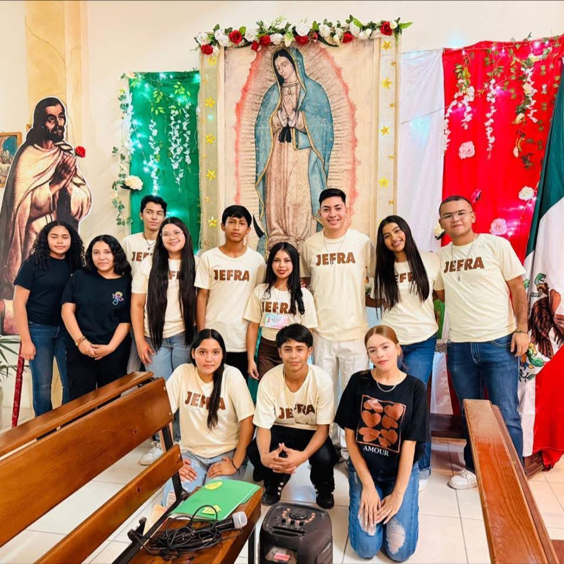
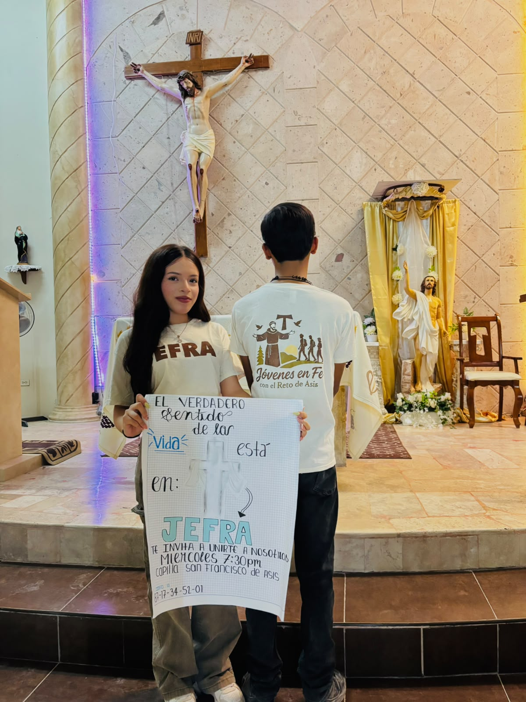
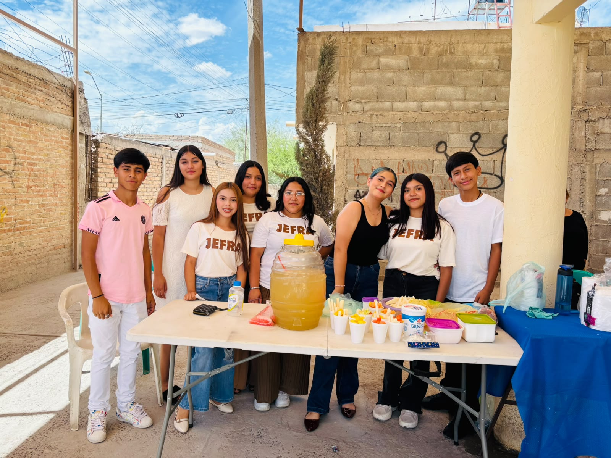

Bienvenidos a JEFRA
Somos un grupo juvenil católico que busca acercar a los jóvenes a Jesús mediante la oración, la formación y la convivencia.

Comunidad
Construimos amistades basadas en el respeto y la fe.

Fe
Conocemos más a Jesús y aprendemos de su palabra.

Servicio
Compartimos nuestros talentos y ayudamos a los demás.